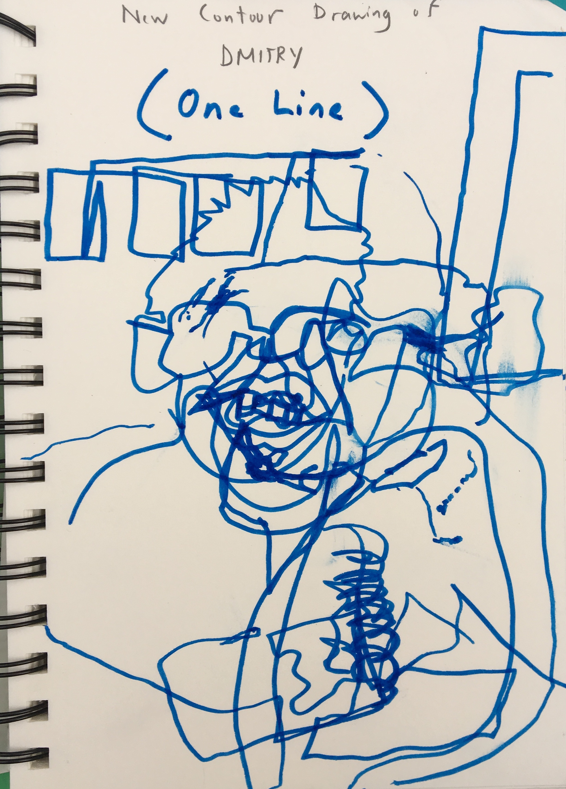
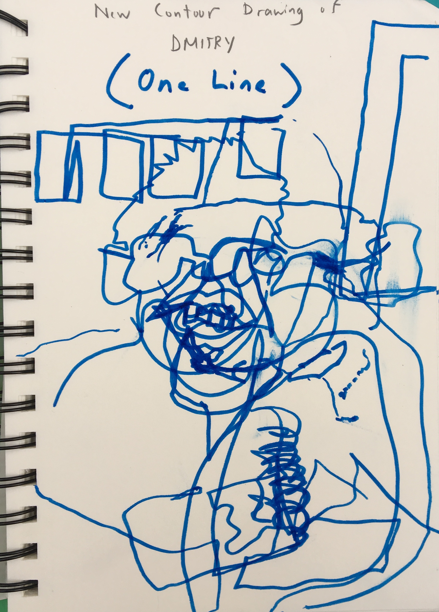

Cycle 3 Artwork
In Cycle 3, we began to study Renaissance Art. We focused a lot on sketching, and also learned about the techniques and works of artists such as Michelangelo, Raphael and Donatello. It proved to be a very interesting topic, and it really helped us to understand the evolution of art.
Click the links to view each project
 
